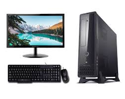

A computer is a machine that can be programmed to automatically carry out sequences of arithmetic or logical operations (computation). Modern digital electronic computers can perform generic sets of operations known as programs. A computer is an electronic device that processes data according to a set of instructions, called a program, to perform a wide range of tasks. It can receive input (like data from a keyboard or mouse), process that data using its central processing unit (CPU), store it in memory or storage, and produce output (like displaying information on a screen or printing it). Computers are versatile and can be programmed to perform various tasks, from simple calculations to complex simulations. They are used in many areas, including education, business, entertainment, and scientific research.
